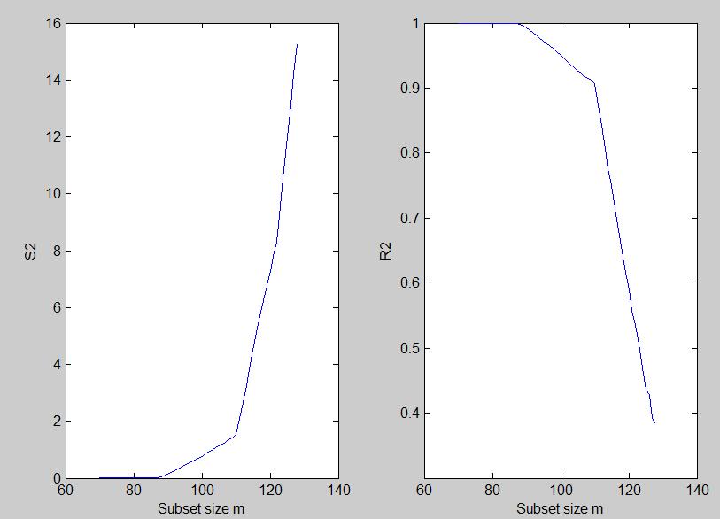
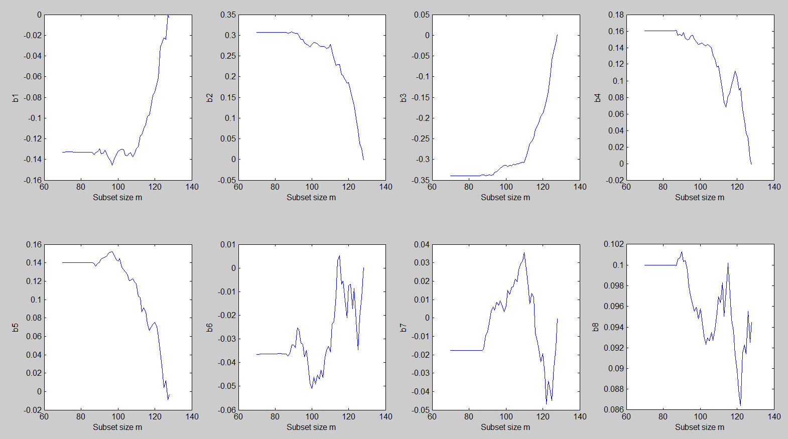

| Flexible Statistics Data Analysis Toolbox™ |
|
Minimum deletion residual
[mdr,Un,BB,Bols,S2] = FSRmdr(y,X,bsb)
[mdr,Un,BB,Bols,S2] = FSRmdr(y,X,bsb,param1,val1,param2,val2,...)
[mdr,Un,BB,Bols,S2] = FSRmdr(y,X,bsb) stores the values of the minimum deletion residual and other basic regression quantities in each step of the forward search. This function is called from FSR in order to compute a store the information which is required to run the automatic outlier detection procedure.
y is a vector of length n containing the response values, while X is the n-by-p-1 matrix which contains (in the columns) the values of p-1 predictive terms. bsb is a vector containing the list of the units forming the initial subset. If bsb=0 (default) then the procedure starts with p units randomly chosen else if bsb is not 0 the search will start with m0=length(bsb)
[mdr,Un,BB,Bols,S2] = FSRmdr(y,X,bsb) returns the following information
Un − (n-init) x 11 matrix which contains the unit(s) included
in the subset at each step of the fwd search.
REMARK: in every step
the new subset is compared with the old subset. Un contains the unit(s)
present in the new subset but not in the old one.
Un(1,2) for example
contains the unit included in step init+1.
...
Un(end,2) contains the units
included in the final step of the search.
BB − n x (n-init+1) matrix containing the information about the units belonging
to the subset at each step of the forward search.
1st col = indexes of the units forming subset in the initial step
...
last column = units forming subset in the final step (all units)
Bols − (n-init+1) x (p+1) matrix containing the monitoring of estimated beta coefficients in each step of the forward search
S2 − (n-init+1) x 3 matrix containing the monitoring of S2 or R2
in each step of the forward search
1st col = fwd search index (from init to n)
2nd col = monitoring of S2
3rd col = monitoring of R2
|
Note FSRmdr is nothing but a simplified version of function FSReda. |
[mdr,Un,BB,Bols,S2] = FSRmdr(y,X,bsb,param1,val1,param2,val2,...) specifies one or more of the name/value pairs described in the following table.
| Parameter | Value |
|---|---|
| 'intercept' |
If 1, a model with constant term will be fitted (default) else no constant term will be included. |
| 'init' |
scalar, which specifies the point where to initialize the search
and start monitoring required diagnostics. Notice that if bsb
is supplied init>=length(bsb). if init is not specified it will be set equal to
|
| 'nocheck' |
Scalar. If nocheck is equal to 1 no check is performed on matrix y and matrix X. Notice that y and X are left unchanged. In other words the additional column of ones for the intercept is not added. As default nocheck=0. The controls on h, alpha and nsamp still remain |
| 'plots' |
If equal to one a plot of minimum deletion residual appears on the screen with 1%, 50% and 99% confidence bands else (default) no plot is shown. Remark: the plot which is produced is very simple. In order to control a series of options in this plot and in order to connect it dynamically to the other forward plots it is necessary to use function mdrplot. |
| 'constr' |
r x 1 vector which contains the list of units which are forced to join the search in the last r steps. The default is constr=''. No constraint is imposed |
load('hawkins.txt');
y=hawkins(:,9);
X=hawkins(:,1:8);
[out]=LXS(y,X,'nsamp',10000);
[~,~,~,Bols,S2] = FSRmdr(y,X,out.bs);
The forward plot of s2 shows that initially the estimate is virtually zero. The four line segments comprising the plot correspond to the four groups of observations
% Plot of the monitoring of S2 and R2
figure;
subplot(1,2,1)
plot(S2(:,1),S2(:,2))
xlabel('Subset size m');
ylabel('S2');
subplot(1,2,2)
plot(S2(:,1),S2(:,3))
xlabel('Subset size m');
ylabel('R2');

The forward plots of the estimates of the beta coefficients show that they are virtually constant until m = 86, after which they start fluctuating in different directions.
% Plots of the monitoring of "Estimates of beta coefficients"
figure;
for j=3:size(Bols,2);
subplot(2,4,j-2)
plot(Bols(:,1),Bols(:,j))
xlabel('Subset size m');
ylabel(['b' num2str(j-2)]);
end

|
|
fsrinvmdr.html | fsrmdrrs.html |
|